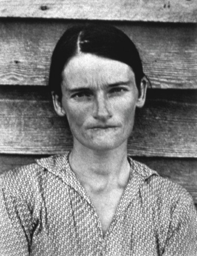
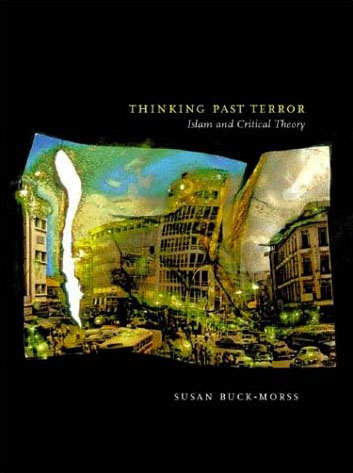

Visual Studies and Global Imagination
Why is Visual Studies a hotspot of attention at this time? Whose interests are being served? Is this inquiry merely a response to the new realities of global culture, or is it producing that culture, and can it do so critically? Thinking globally, but from the particular, ‘local’ position of the History of Art and through the medium of the visual image, a distinct aesthetics emerges, a science of the sensible that in our time accepts the thin membrane of images as the way globalisation is unavoidably perceived. How can theory learn from contemporary art practices engaged in stretching that membrane, providing depth of field, slowing the tempo of perception, and allowing images to expose a space of common political action? What does ‘world opinion’ mean in the context of global images? What are the implications for a critical Visual Studies that resists inequities by rubbing the global imagination against the grain? Can Visual Studies enter a field of negotiation for the move away from European hegemony toward the construction of a globally democratic, public sphere?
Introduction
Whatever the stated goals of Visual Studies, its effect is the production of new knowledge and its first challenge is to be aware of this. According to one well-established, critical tradition, this means questioning the conditions of its own production. Why is Visual Studies a hotspot of interest at this time? Whose interests are being served? In analyzing the technologies of cultural production and reproduction, can Visual Studies affect their use? Is this inquiry merely a response to the new realities of global culture, or is it producing that culture, and if the latter, can it do so critically? These questions are not academic. They are concerned unavoidably with the larger world, and with the inevitable connection between knowledge and power that shapes that world in general and fundamentally political ways.
I will be very bold. Visual Studies can provide the opportunity to engage in a transformation of thought on a general level. Indeed, the very elusiveness of Visual Studies gives this endeavour the epistemological resiliency necessary to confront a present transformation in existing structures of knowledge, one that is being played out in institutional venues throughout the globe.
Western scientific and cultural hegemony was the intellectual reality of the first five hundred years of globalization, lasting from the beginning of European colonial expansion to the end of the Soviet modernizing project. It will not remain hegemonic in the next millennium. Our era of globalisation, in which communication rather than coinage is the medium of exchange, presses technologically toward transforming the social relations of knowledge production and dissemination. We are at a cusp. Visual Studies exists within this transitional space as a promise and a possibility, capable of intervening decisively to promote the democratic nature of that transformation. Nothing less is at stake for knowledge. Trans-disciplinary rather than a separate discipline, Visual Studies enters a field of negotiation for the move away from Western hegemony towards the construction of a globally democratic public sphere.
The global transformation of culture that catches us in its midst is not automatically progressive. The technological possibilities of the new media are embedded in global relations that are wildly unequal in regard to production capacities and distributive effects. Their development is skewed by economic and military interests that have nothing to do with culture in a global, human sense. But there are forces now in play that point to the vulnerability of present structures of power. Images circle the globe today in de-centered patterns that allow unprecedented access, sliding almost without friction past language barriers and national frontiers. This basic fact, as self-evident as it is profound, guarantees the democratic potential of image-production and distribution – in contrast to the existing situation.
Globalisation has given birth to images of planetary peace, global justice, and sustainable economic development that its present configuration cannot deliver. These goals are furthered not by rejecting the processes of globalization, but by reorienting them. Reorientation becomes the revolution of our time.
Reorientation: The History of Art
I do not wish to overstate the role that critical intellectual practices can play on a global scale. We academics are participants in these global processes, nothing more, but also nothing less. Reorientation means precisely to be aware of this participatory status, which can mean in our case, not to narrow our vision to academic politics as if all that were at stake in the advent of Visual Studies were funding decisions and departmental hiring. And yet the debate over these very parochial concerns is where to begin, because reorientation occurs vis-à-vis particular positions, not some abstract universal. ‘Think global: act local,’ as the slogan has it, and in this context, the widely held view that Visual Studies is a recent offshoot of Art History deserves our scrutiny. What does reorientation entail in the local sense of one academic discipline, the History of Art, which has become central to discussions of Visual Studies? There is no facile or single answer to this question because this discipline, as a microcosm of the general situation, finds itself in a contradictory position: on the one hand, the History of Art as traditionally practiced is most vulnerable to the challenge of Visual Studies; on the other, as the most authoritative domain for the modern study of the visual, it can lay strong claim to be its legitimate home. How did the situation of this one academic locality arise?
The History of Art has in the past been content as a small discipline, approaching the development of, specifically, Western art (indeed, it has treated art and Western art as nearly synonymous). It adhered to an established canon of artists and works, only slowly allowing new names to enter sainthood. Within American universities, its greatest impact was the survey course that it traditionally offered undergraduates, who learned from large lectures and dual slide projectors what counts as art, and why. This is ‘art appreciation,’ and has been a staple of higher education, producing future generations of museum-goers. At the same time, and against all modest pretensions, Art History was unabashedly elitist in its presumptions of connoisseurship. With growing alarm, it defended the boundary that separates culture, indeed, civilization itself, from the barbarous kitsch of an increasingly invasive culture industry.
The attack came from within, however, from the artists themselves, who brought the Trojan horse of commodity culture into the hallowed grounds of the museum. Andy Warhol’s 1962 Brillo Boxes were a defining moment, an invasion of the museum by commercial design causing, as Arthur Danto famously expressed it, nothing less lethal than the ‘end of art.’1 Yet since that pronouncement (two decades ago) the production of art has not only increased, it has exploded, establishing its own global orbit as the ‘artworld.’
Although we now accept it as commonplace, the artworld is in fact a historically unique phenomenon. Its precondition was the transformation of art patronage and art purchases that occurred with the new global economy. The world trade in art intensified in the 1970s and 1980s as part of a general financial revolution, along with hedgefunds, international mortgages, and secondary financial instruments of all kinds. The explosion of the art market caused a reconfiguration of the History of Art: the Western canon (which now included the art of a modernism-grown-obsolete) became only one of the founding traditions of contemporary art that for its part, with the aid of corporate patronage, expanded globally along an ever-increasing circuit of biennials and international exhibitions.
Whereas in Warhol’s art and Pop Art generally, corporate images provided the content for art-interventions, now corporations are art’s entrepreneurial promoters. Their logos appear as the sponsors of art events, the enablers of art and, indeed, high culture generally. Within the confines of the artworld, everything is allowed, but with the message: THIS FREEDOM IS BROUGHT TO YOU BY THE CORPORATIONS. Corporate executives have become a new generation of art collectors (advertising and PR giant Charles Saatchi, for example), connecting the business class directly to the class of art connoisseurs. But unlike their predecessors (William S. Paley of CBS-TV, for example, whose beautiful collection of small oil paintings was intensely personal), the taste of the new art moguls is special, particularly in regard to size. Corporate patronage encourages BIG ART – art that precisely cannot be privately housed and exhibited. Note that size is a formal characteristic that has nothing to do with art’s content. With Big Art, the authenticity of the original assumes its aura on the basis of sublime proportions.
There is something remarkable about this shift in the position of big business from being the visible content of Pop Art to being the invisible producer of global exhibitions, from being the scene to being behind the scenes. The profits that result from the advertising and packaging of products (value added to commodities produced by cheap labour globally) now gives financial support to the high culture of a new, global economic class.
But before concluding that globalization is the problem, we need to recognize the global artworld as itself a contradictory space – suggesting again that reorientation rather than rejection is the best political strategy. On the one hand globalization transforms art patronage into corporate financing of blockbuster shows and turns the art market into a financial instrument for currency hedging. On the other, its cavernous size allows ample opportunities for alternative art, a myriad of forms of cultural resistance. Moreover, the global artworld’s inclusion of the vibrant, new work of non-Western artists is quickly overwhelming the traditional story of art as a Western narrative. Non-Western artists are denied the luxury of imagining art as an isolated and protected realm. Reflection on the larger visual culture, the collective representations of which frame their art, is difficult, if not impossible to avoid. Even if the artworld’s financial motives for the inclusion of these new artists have been less than laudable – the establishment of market niches for culture produced by the exotic ‘other’ – the results have been so transformative that the History of Art as an inner-historical phenomenon can no longer contain it. Western Art History, once deeply implicated in the history of Western colonialism, has in turn become threatened, in danger of colonization by the global power that visual culture has become.
The Crisis of Art History
It is noteworthy that while departments of literature have also felt the onslaught of the new, global visual culture, they appear to be less threatened. Film studies, for example, can be absorbed within traditional literary categories of narrative, plot and authorial style. Movie genres replicate the narrative forms of written fiction: comedy, mystery, science fiction, melodrama, historical drama, and the like. Shakespeare as playwright and Shakespeare’s plays as cinema can be fruitfully compared. The critical methods of literature when applied to films not only work, they tend to reaffirm literature’s superiority. The techniques of filmmaking tend to get less attention than cinema’s narrative and textual qualities, which are culled as virgin territory for theories designed in other university venues: psychoanalysis, semiotics, queer theory, feminism, post-colonialism – with the unfortunate consequence that the visual is often repressed in the process of its analysis, blanketed over by thick, opaque layers of theoretical text so that, visually, only a few film-stills or video clips remain.
If the discipline of the History of Art is more profoundly affected, it is because unlike literary studies, it cannot avoid direct discussion of the visual. Visuality is the point of crisis at which the History of Art and the study of visual culture necessarily collide. To be sure, imagery (symbol, allegory, metaphor, and the like) plays a dominant role in literature. Language is full of images, and there is no way within literary studies that an analytical distinction between image and word can be sustained. But the image that is visibly perceptible is distinct. In it, the word participates as itself an image, as calligraphy or as print-material (in collage, for example), the meaning of which is tied to its visibility, and cannot be reduced to semantic content.
It was the advent of photography that allowed an experience of the image in its pure form, separate from both literary texts and works of art. Of utmost significance is the fact that the visual experience provided by the photograph is of an image collectively perceived. Unlike the inner experiences of a mental image, dream image or hallucination, this image is not the product of individual consciousness.
Photographs were first conceived as a ‘film’ off the surface of objects. (Painting retreated from mimetic realism and moved into visual modalities where the camera could not follow.) Now, the History of Art as a discipline became indebted to the new technology of photography in ways largely unrecognized within the discipline’s own foundational stories, and without parallel in literary studies’ relationship to cinema.
In Europe’s early modern era, art appreciation depended on visiting the sites; the grand tour of the ancient art and architecture of Italy and Greece was the classic example. Later the national museums brought the masterpieces to urban capitals and lent to them accessibility beyond the aristocratic class, while art classes of national academies took place in the galleries themselves.
I do not know when coffee table books of art first became common and inexpensive enough to grace the homes of the middle classes. Books of plates of art masterpieces are much older, dependent on reproduction technologies of early printing. But since the end of the nineteenth century, Art History as a university discipline has relied on the technology of the slide projector, displaying images of masterpieces from those small, squares of film mounted in frames, called ‘transparencies,’ that enabled the transportation of art masterpieces to educational settings far apart from the original artworks’ museum home.
It is in the moment of the digitalization of art-slide collections that we are made aware of the extent to which the History of Art has been mediated by the photographic image, allowing art to be shown as slides. Transparencies do strange things to the art original: they destroy the sense of material presence, of course. But they also flatten out the texture of brushstroke, they play tricks on the luminescence of the original, and most strikingly, they distort scale. All images shown in the art history lecture hall (and also in the coffee-table art book) are the same relative size, dependent, not on the size of the object (salon paintings and gothic cathedrals are equivalents) but on the size of the book page, or on the focal distance between projector and screen.
What I am getting at is that the History of Art has long been a visual study of images as well as – and often more than – a study of present art objects. Hence the challenge of Visual Studies is that it exposes the History of Art as having been Visual Studies all along.
The Mysteries of the Image
Visual Studies, for which the image is of central concern, begins with a dilemma. It can be expressed in the juxtaposition of two modern judgments of the image. The first is by Julia Kristeva from a recent interview in Parallax: ‘[I]mages … are the new opium of the people … .’ 2 The second is by Walter Benjamin from his 1928 essay on Surrealism: ‘Only images in the mind motivate the will.’ 3 Are images the inhibitor or are they the enabler of human agency? Can these two, apparently contradictory claims be reconciled?
When Marx declared religion as the opium of the masses, he did not merely dismiss it, but took religion seriously as an alienated form of collective social desire. Likewise, Kristeva acknowledges that images do provide ‘a temporary relief’ from ‘the extinction of psychic space’; but she warns that insofar as they are substitutes for psychic representations, they are themselves a symptom of the problem, which she sees as the decline of psychic imagination in this ‘planetary age.’ 4
Benjamin’s optimism is not irreconcilable with Kristeva’s critique, if what she sees as our endangered ‘psychic representations’ are his surrealist-inspired ‘images in the mind.’ But there is no easy equivalence in these two approaches – her psychic representations are individual and internal; his images are collective and social. What is at issue is the philosophical status of the image tout court, leading us to the mysteries of the image. What is it? Where is it located? If non-mental images are a film off of objects, how does this record of the world become a psychic representation, an ‘image in the mind?’ What is the relation of non-mental images to mental ones? To causality? To reality? To sociality?
The political question is this: How can individual, psychic representations have social and political effect if not through the sharing of images, and how can these be shared if not through precisely that image-culture which threatens to overwhelm our individual imaginations that, Kristeva claims, need protection from it?
Let us consider more closely the mysteries of the image, which photography and cinema bring into sharp relief. If we can name anything as an object specific to Visual Studies, it is the image. It is a medium for the transmission of material reality. But it would be wrong to conclude that we should conflate Visual Studies with Media Studies, as if only the form of transmission matters. An image is tied to the content that it transmits. The traditional artwork is tied to content too, of course, but with this difference: the artwork is produced through the active intervention of a subject, the artist, who may be working realistically to render an object as an imitation of nature, or romantically to express an inner feeling, or abstractly to express the pure visual experience itself. But the artwork in all of these cases represents, whereas the image gives evidence. The meaning of the artwork is the intention of the artist; the meaning of the image is the intentionality of the world.
If the world as picture (Heidegger’s phrase) fits reality into a frame and gives it meaning in that way, the world as image takes intentionality from the object, as its material, indexical trace. The image is taken; the artwork is made. When I speak of evidence here I mean it in a phenomenological rather than legal sense – not juridical proof, but closer to Husserl’s description of the ‘schlagender Evidenz’ (‘striking evidence’) of sensory intuition. (Husserl and Bergson, philosophers of the era of photography and early cinema, have become central to discussions of Visual Studies.) The fact that photographic evidence is regularly manipulated and can often lie, the fact that we ‘see’ what we are culturally and ideologically predisposed to see, is not the point. False evidence is no less evident than true evidence (the term refers to visibility, the ability to be seen at all). An image – its evidence – is apparent; its adequacy is a function of that which appears, regardless of whether this is an accurate reflection of reality. An image takes a film off the face of the world and shows it as meaningful (this is what I am describing as objective intentionality), but this apparent meaning is separate from what the world may be in reality, or what we, with our own prejudices, may insist is its significance.
Note that in the case of a slide-transparency of a painting, the evidence provided is of the artwork itself. Leaving the romantic idea of artist-as-image-creator behind, the image-as-evidence that records the intentionality of the object points to the priority of the material world. Of course, it takes artistic vision to produce a scene from which a filmic image can be taken. But the scene itself is composed of objects (in Luis Buñuel and Salvador Dalí’s Un Chien andalou, a dead donkey’s head on a grand piano). The distinction between subjective and objective intentionality is not necessarily the same as that between art and photography: in ‘arty’ photographs, subjective intention dominates, whereas artists have produced ‘paintings’ in which the intentionality of the object is recorded (as in Picasso’s collages). Is a collage art, or is it reality? Is a film reality, or is it art? Many of the early-twentieth-century artists and filmmakers experimented in ways that cast doubt on the difference.
Walter Benjamin’s brilliant essay on ‘The Work of Art in the Age of Its Technological Reproduction’ (the second variant, now available in English) is a milestone in realizing the implications of this transformation of the significance of the image, now understood not merely as representing the real, but as producing a new reality, a sur-reality: the image in its pure form.5 The visual image as a film off of objects is recognized as having its own status, along with its own material presence. What I find important for our own historical moment is that Benjamin in his theorizing was inspired less by philosophers and art critics than by the practices of artists themselves – the Bolshevik avant-garde and surrealists most intensely. This theorizing of the image-world out of artistic practice, instead of fitting art practices into preexisting theoretical frames is, I want to claim, the approach that we need to take today.
Consider the surrealist project, Un Chien andalou, the short silent film shot by Buñuel and Dalí in 1928, at the dawn of the first sound film – hence the most mature, the twilight stage of silent film – and the same year Benjamin wrote his essay on surrealism. It in fact shows us a world consisting, as he wrote, ‘one hundred percent’ of images, film taken off objects as evidence of material reality.6 These images are not internal and psychic, but non-mental and collectively visible in social space. The objects in the images are real enough, but they do not represent reality. Visible space is legible, but incredible. The same is true of time. The film’s sequence jumps forward and falls backward (‘once upon a time;’ ‘eight years later;’ ‘sixteen years before;’ ‘in the spring’). For stills of the film, please scroll down the pages of www.kyushu-ns.ac.jp/~allan/Documents/societyincinema-03.htm until you reach ‘Un Chien Andalou’.
The point is that the viewer quickly gives up trying to see the film as the representation of characters, or actions, or a place. Fetish objects: a necktie, a severed hand, a locked box, a dead donkey on a grand piano, ants crawling on an open palm – these images appear to us as full of meaning, while at the same time unmotivated by any subjective intent. Their meaningfulness, their intentionality is objective, not subjective. The filmed objects, while fully perceptible in an everyday way, appear estranged from the everyday. They are the day’s residues of dreams, but without the memory of the dreamer who could decipher them.
Benjamin compared surrealist thinking to the philosophical realism of medieval illumination, as ‘profane illumination.’ Not as representations of something else but as themselves, these images enter the mind and leave a trace there. But how can such images provide a political orientation? The answer to this question, central to Visual Studies, implies a reorientation of aesthetics.
Aesthetics I, II, III …
I teach a graduate seminar in aesthetics – not in the Art History Department, but as Political Theory. The course concerns itself with the intersection of aesthetics and politics in Western critical theory. I have found it helpful conceptually to separate three strands of modern aesthetics (the word means literally the ‘science of the sensible’) because they have different origins, different premises, and different historical trajectories. I call them, plainly enough: Aesthetics I, Aesthetics II, and Aesthetics III (there could be more).
All of these develop out of Western modernity, where empirical experience is the basis of knowledge, and where aesthetics therefore takes on a heightened significance, because in lieu of religious revelation, sensory experience is called upon to yield the meaning of life; it is the source of value and existential truth. Western aesthetics has, however, taken very different forms, or better put, it has assumed different orientations. Note that these are not stages successively overcome, but related perspectives that have developed parallel to each other, if at different historical speeds and intensities, and all of them exist today.
Aesthetics I is concerned fundamentally with art. It finds a philosophical Urtext in Kant’s third critique, the Critique of Judgment, which became significant in the Romantic era to both artists and political theorists, and has remained a seminal text. The influential art critic Clement Greenberg privileged Kant’s self-critical method, justifying the development of modern art, culminating in abstract expressionism, as a working out of Kantian logic: the content of non-representational, or abstract art was visual experience itself in pure form. Moreover, he connected this art (produced by individuals, appreciated by the cognoscenti) with the culture of democracy, at the same time condemning as kitsch both commercial art and political propaganda.
Aesthetics I has outgrown Greenberg’s grand narrative. It now includes philosophies of art from Hegel to Derrida. It has expanded creatively to encompass non-Western art and new media art, and it addresses the visual cultural context of artworks in a multidisciplinary way. Aesthetics I can be seen to encompass the most progressive methods and approaches of Departments of Art History that have embraced a certain meaning of Visual Studies, one for which art, however broadly defined, remains the central object of investigation.
Aesthetics II is the often gloomy brother. It is grounded in the Hegelian distinction between truth or essence (Wesen), that is accessible only through concepts, and appearance (Schein), that is available to sensory perception. While truth appears, it does so in illusory form – so much the worse for the image. For Hegel, art is logically and historically superceded by philosophy. The legacy of Hegel is to be suspicious of the senses, because they cannot grasp, as does the concept, the supersensible whole. Evidence of the world transmitted by the image is thus necessarily deceiving. Reification is a key concept here: the truth of the object lies behind its appearance. This is Marx’s lament: commodities are fetishes worshipped by modern man, preventing knowledge of the true nature of class society.
Thinkers like Georg Simmel, Sigfried Kracauer, and Georg Lukács elaborated the further Marxian insight that the instrument of perception, the human sensorium, changes with the experience of modernity. The urban metropolis, the factory, the bourgeois interior, the department store – these sensory environments shape perception and determine the degree to which it can lead to knowledge. Aesthetics, no longer equated with art as it was for Hegel, becomes corporeal, or sensory cognition, criticized in its modern form as having the effect, rather, of anaesthetics (this was the argument in my article, ‘Aesthetics and Anaesthetics: Walter Benjamin’s Artwork Essay Reconsidered’7). Aesthetics II infuses traditions of critical sociology, practiced today by social theorists and geographers. The abundant literature criticizing the culture industry belongs here as well.
Postcolonial theory joins the tradition of Aesthetics II when it exposes the ethnographic imaginary of the ‘primitive’ as distorting perceptions that have their origins in Western modernity. ‘The world as staged,’ Timothy Mitchell has called it, placed on exhibition by the West as the representation of its own superiority. In Mitchell’s postcolonial critique, the need, again, is to see past the staged appearance of reality to the mechanisms of colonial control that underlie it. Aesthetics II embraces Visual Studies through the path of Visual Culture – Cultural Studies is the link between its critical theoretical heritage and its empirical, socio-political concerns.
Anonymous photograph reproduced as an illustration for Benjamin Péret’s article “La Nature dévore le progrès et le dépasse.” Minotaure, no. 10, Winter 1937, p. 20.
Aesthetics III is more sanguine about the image, approaching it as a key, rather than a hindrance to understanding. Like powerful binoculars, the image intensifies experience, illuminating realities that otherwise go unnoticed. (The content of figure 1 may be gloomy, but its cognitive power is affirmed.) Benjamin spoke of ‘unconscious optics,’ discovering in surrealism the ‘long sought-after image-space’ for a world of ‘actualities’ and action. He was referring not just to photography and cinema, but to the experience of the city that opens up to the flâneur, and that finds expression as well in Baudelaire’s poetry, Bolshevik constructivism and photomontage. Images, no longer subservient to the text as its illustration, are free to act directly on the mind. The collectively accessible assemblage of images is the antithesis of the cult of artistic genius that expresses a private world of meaning. With the affirmative orientation of Aesthetics III, one risks falling victim to the illusions of the society as spectacle, but the risk is worth the promise of illumination.
The image is the medium for Aesthetics I; it is the problem for Aesthetics II. In discussions of Visual Studies, Aesthetics III has received far less attention. What are the implications of an orientation of aesthetics that looks to the image for inspiration?
Aesthetics III does not search for what lies behind the image. The truth of objects is precisely the surface they present to be captured on film. As Gilles Deleuze writes, cinema helps him to think philosophically – and Deleuze is a theorist of Visual Studies oriented toward the image itself. The political implications of Aesthetics III are suggested by the singularity of the image, its ability to name itself, to propose its own caption, rather than fitting within pre-existing frames of meaning. Images, while collectively shared, escape the generalization of the concept, so that we need to come to them to decipher their meaning. In short, we need to see them.
But how, if not by submission to a text, does the image have political effect? Can the radical freedom discovered by the surrealists enable the politicization of the image-world without turning it into propaganda? And how are we to relate the image’s political-effect to its knowledge-effect? Can images be disciplined (as an object of Visual Studies) and still be ‘free’? Moreover, can this discussion be brought back to the claim made at the outset of this essay that Visual Studies can contribute to the democratization of culture in the context of the new globalization? Again, let us take the discipline of Art History as our point of departure.
Discipline
Otto Pächt describes the method of the art historian, for whom ‘there is always something disquieting about the isolated work of art:’
In art history it is possible … to take an art object that has knocked around the world, nameless and masterless, and to issue a relatively precise birth certificate for it… . Errors and misjudgments quite often occur, but this does not seriously compromise the value of the techniques employed … . In principle the equation holds good: to see a thing rightly is to date and ascribe it rightly.8
But the fact about images is that they do float in isolation, moving in and out of contexts, freed from their origin and the history of their provenance. The superficiality of the image, its transferability, its accessibility – all of these qualities render the issue of provenance ambiguous, if not irrelevant. An image is stumbled upon, found without being lost. Arguably most at home when it ‘knocks around the world,’ an image is promiscuous by nature.
If Visual Studies is viewed simply as an extension of Art History, then its task would seem to be to apprehend these images and return them to their rightful owners. On the other hand, if Visual Studies is to live up to its democratic political potential, this is the point where the methods of these knowledge-pursuits may need to go separate ways. In doing so Visual Studies will take its lead, not from the discipline of Art History, but from the contemporary practices of the many artists, globally, who have made the wandering image the very content of their work.
A discipline (as Foucault argued) produces its object as an effect, telling the subject what questions it can ask of the object, and how; and telling the object what about it is meaningful to study (defining the object in ways that make it accessible to the questions posed to it). The confining aspect of a discipline is evident to any student who specializes in one or another of them. The world is not divided into the pie-slices that are created by the disciplines, as it is the same world studied in all cases; rather, the way it looks back at the viewer changes as disciplinary boundaries are crossed.
Unlike the other disciplines, an orientation of Visual Studies that has the image as its object is not a pie-slice, not a delineated sector of the world, but a film off the world’s surface. The surface of the image is itself the boundary that allows a certain idea of Visual Studies to emerge. The image surface immediately sends out two lines of force, one toward the viewer, and one toward (any aspect of) the world. Both lines move away from the surface, so that the image boundary appears to disappear. Objects are in the image, not in their entirety, but as an intentionality, a face turned toward the perceiver. Lines of perception moving across the surface of multiple images traverse the world in infinite direction and variation. Cutting through space rather than occupying it as an object with extensions, image-lines are rhizomic connections – transversalities rather than totalities. These image-lines produce the world-asimage that in our era of globalization is the form of collective cognition (image-form replaces the commodity-form).
Possession and the Means of Production
Nothing gives a stronger sense of the promiscuity of the image, as opposed to the legitimate birth of the artwork, than dragging and clicking from a Google image-search onto your computer’s desktop – ‘subject to copyright,’ to be sure, but no less available for the taking. What do you possess? Given the minimal labour of moving a computer-mouse, no labour value is added to the image by its procurement. Moreover, without the metadata necessary to interpret the image according to the intention of the artist (or photographer, or cinematographer) the formatting palette on your computer will never get it right. By the standards of the art-object, to be sure, the digital copy is irrevocably impoverished and degraded. But if this matters, and should matter, for the discipline of the History of Art, for another understanding of Visual Studies it does not. Benjamin applauded Baudelaire who, when confronted with the loss of aura of the artwork, was content to let it go. The reproduceability of the image is infinite (with digital technology it is instantaneous), and quantity changes the quality, allowing for the reappropriation of the components out of which our image-world is formed. The image disconnects from the idea of being a reproduction of an authentic original, and becomes something else.
Separated from its source, disposable, dragged to the trash at any moment, what is its value? And to whom does this value rightfully belong? A computer session is not a day on the beach. To see the value of the image in terms of information, standard in discussions of digital processing, is also misleading, just as referral to a computer menu does not mean that you get something tasty to consume. A computer is a tool.
Unlike the machines of the industrial revolution, however, this tool can be personalized: users may be multiple, but they are discreet; access demands a private password. Still, under present conditions, even if you own a PC, it is not quite the same as owning the means of production. The relation is more like out-sourcing. For if the work of travel agents, bank tellers, sales clerks and check-out workers is presently being exported (from the U.S.A. to India, for example), the ultimate savings of labour costs is when consumers do the work themselves.
The word cybernetics (ancient Greek for the helmsman who orients a ship) was chosen to refer to the capacity of the machine to mimic human thought, although much of the present work demanded by computers is mindless. It demands attention and accuracy, insisting on ‘auto-correct,’ hence an inhuman freedom from error, which is another way of saying that it allows only strictly programmed responses.
The so-called information generated in the information age in fact consists largely of instructions, whereby computer-users replace service workers by performing tasks that were previously part of production. But if they try to use the computers imaginatively, innovatively, in ways that produce value for them, they are just steps away from violation of copyright. They are dangerous as pirates or hackers – net-criminals, all.
But in regard to this new means of production, the danger must be tolerated by the global capitalist system. Indeed, the system benefits from the expansion of computer technology worldwide (expansion is not synonymous with equitable distribution). In order for profits to be made, the means of production – computers – need to be put into people’s hands. In the process, they learn to appropriate the Internet for personal (and political) use, which unlike appropriations of pens and paper from an office supply-room, entails taking from sources that are inexhaustible – including music, DVDs, and images of every kind.
Granted, there are set-up costs that may be ongoing, but digital archives, web pages, and data banks are socialized resources almost by definition. Pirates and hackers, unlike the wreckers of old, do not throw a wrench in production, they accelerate it – to a point that escapes the private property relations that undergird the copyright system. This trend sees inevitable. The more anti-piracy legislation and the shriller the rhetoric on its behalf, the greater the indication that the global computer system cannot sustain – and cannot be sustained by – the old bourgeois notions of commodity exchange, whereby the world and its wealth are divided and controlled by exclusive proprietors.
Against the model of Bill Gates, whose software copyrights bring in revenues larger than that of many nations and whose idea of redistribution is limited to personal philanthropy, a socialist ethic appears to evolve naturally from the free, productive use of computer power. Cyberspace is open by definition; private access is to a public good. It is plausible that sharing the inexhaustible resources of the computer will lead to a consciousness that exhaustible resources, too, are collective values that belong in the public trust. If the global monopolies of the culture industry stand to lose against the socializing tendencies inherent in the new technology, they should yield to their own sacred laws of the market and close down business. The music will be better for it.
But if music and movies are still entertainment, hence ruled to a certain degree by commodity logic even without infinite copyright income, the case of the image is different. The force of the image occurs when it is dislodged from context. It does not belong to the commodity-form, even if it is found – stumbled upon – in that form, as it is so powerfully in advertisements.
Images are used to think, which is why attribution seems irrelevant. Their creation is already the promise of infinite accessibility. They are not a piece of land. They are a mediating term between things and thought, between the mental and the non-mental. They allow the connection. To drag-and-click an image is to appropriate it, not as someone else’s product, but as an object of one’s own sensory experience. You take it, the way you take a photograph of a monument, or a friend, or a landscape. The image is frozen perception. It provides the armature for ideas.
Images, no longer viewed as copies of a privately owned original, move into public space as their own reality, where their assembly is an act of the production of meaning. Collectively perceived, collectively exchanged, they are the building blocks of culture. Collectors of images like Aby Warburg recognized this when in his ongoing work Mnemosyne Atlas, an archive of social memory, he placed images of ancient Greek figures-in-motion next to newspaper photos of women golfers because the folds of drapery of their dress were the same. Walter Benjamin wrote in 1932 that Warburg’s library was ‘the hallmark of the new spirit of research’ because it ‘filled the marginal areas of historical study with fresh life.’9 (Gerhard Richter’s Atlas is a similar collection, and it provided the image-material for his paintings.)
These image-archives resemble the older print-archive that we know as the dictionary. Dictionaries, like databanks, have copyrights, but it would be absurd to claim that their publishers or compilers own the words listed in them. If I copy someone’s words, it is plagiarism. If I use the same words for different thoughts, it is not. Indeed, the power of the word-in-use, and what we value in a writer or poet, is the ability to infuse old words with new life. The same holds, or should hold, for images. Of course, a proprietary relationship to the word is exactly what is claimed by trademarks – I cannot type the word Xerox or Apple without the auto-correct software capitalizing it to indicate possession. But the moral concept that functions legitimately here is accountability rather than property. Trademarks not only have a marketing function; they hold the producer responsible to the public who can be deceived by falsely naming. As the importance of private property wanes, that of public accountability will need to intensify.
Images, then, are not art copies and they do not replace the art-experience. As tools of thought, their value-producing potential demands their creative use. Both in their original form and in what is made of them, this value requires, rightly, that we acknowledge those artists, or others who made them – they deserve our credit (the word means faith, trust, approval, honour), not our cash.

Sherrie Levine, After Walker Evans (1981); [or] Walker Evans, Alabama Tenant Farmer Wife (1936).
Whose property is this (Fig. 2)? Is it Sherrie Levine’s from After Walker Evans, her series of photographs that she took from photographs that were taken by Walker Evans in the 1930s? Or is it Walker Evans’? Might it not as well be the property of the person whose face is depicted? Or is it my property, as I think, and ask you to think with me, about the image? If I post my private photo on the web, is it public? Can I own a copyright on it, or does it have no value? Who decides?
As for the untitled image (Fig. 2), I took it from the web. I was looking in vain for Sherrie Levine’s photograph, until I realized that it would be posted under Walker Evans. His photograph, taken with government funds as part of the FSA project of 1930s, is ‘owned’ by the U.S. Library of Congress (and therefore by me as a tax-paying, American. citizen?) Who is accountable for this image? Whom do I credit, if not the website from which I dragged it into this presentation?
The Sur-face of the Image
We have argued that the image does not represent an object. Rather, objects are in the image, not in their entirety but as an image-trace, at one unique instant when the objects are caught, taken, apprehended. They show a face, a sur-face. We have said that this surface of images is a boundary that shifts a certain idea of Visual Studies away from the discipline of Art History – a boundary that itself becomes the object of critical reflection. We can develop this idea of the image sur-face, describing its implications.
Even when they are accessed as streaming video, images are frozen perceptions. They can be manipulated, but the result is still a new image, a new perception. Once a perception is fixed, its meaning is set in motion. Manipulation occurs on the surface of an image, not its source. Only if we are concerned with the image as representation of an object are we deceived, or the object maligned.
The one-time-only, unique nature of this perceptual moment captured in the image contrasts sharply with its infinite reproduceability. An image is shared. As with a word, this sharing is the precondition for its value. Images are the archive of collective memory. The twentieth century distinguishes itself from all previous centuries because it has left a photographic trace. What is seen only once and recorded, can be perceived any time and by all. History becomes the shared singularity of an event.
The complaint that images are taken out of context (cultural context, artistic intention, previous contexts of any sort) is not valid. To struggle to bind them again to their source is not only impossible (as it actually produces a new meaning); it is to miss what is powerful about them, their capacity to generate meaning, and not merely to transmit it.
The image establishes a specific relationship between the singular and the universal. An image can be taken off any object – landscape, human face, artwork, sewer, molecule, growing plant, a ghost, or an unidentified flying object. In an image, one particular face of a person, place or thing is fixed as a surface and set loose, set in motion around the world, whereas the person, place, or thing cannot itself move in this multiplying and speedy fashion.
Images are sent as postcards, satellite-transmitted, photocopied, digitalized, downloaded, and dragged. They find their viewers. We can observe people around the globe observing the same images (a news photo, a movie, the documentation of a catastrophe). The political consequences are not automatically progressive.
Meaning will not stick to the image. It will depend on its deployment, not its source. Hermeneutics shifts its orientation away from historical or cultural or authorial/artistic intent, and toward the image-event, the constantly moving perception. Understanding relies on empathy that mimics the look of the image. A new kind of global community becomes possible – and also a new kind of hate. People are in contact as collective viewers who do not know each other, cannot speak to each other, do not understand each other’s contexts. Mimesis can be ridicule as well as admiration, stereotype rather than empathic identification.
Conclusion(s)
Here are three variants of a conclusion to this essay (there could be more).
The Bubble Problem (Aesthetics II meets Aesthetics III):
In the global image-world those in power produce a narrative code. The close fit between image and code within the narrative bubble engenders the collective autism of television news. Meanings are not negotiated; they are imposed. We know the meaning of an event before we see it. We cannot see except in this blinded way.
Escape from the bubble is not to ‘reality,’ but to another image-realm. The promiscuity of the image allows for leaks. Images flow outside the bubble into an aesthetic field not contained by the official narration of power. The image that refuses to stay put in the context of this narration is disruptive. We have no more startling example of this than the image-event of Abu-Ghraib prison. With digital and video cameras, 1,800 images were produced, capable of instant, global circulation on the Internet. The images of American soldiers, both men and women, humiliating and abusing Iraqi prisoners were described by members of the Bush administration as ‘radioactive,’ and in fact their leak did not merely disrupt the official narrative, it caused a meltdown, exploding the myth of the American preemptive war as a moral struggle of good against evil. After all of the attempts at censorship and control, all of the embedded journalism that characterized the war itself, this image-event, produced unwittingly by a few individuals acting under orders, exploded the entire fantasy, simply blew it apart. Its effect was no less deadly to the American war effort than a guerrilla attack on an oil pipeline or an army transport. In destroying the Bush regime’s credibility and undermining its legitimacy, it was arguably more destructive.
State terror is viscerally present in these photographs. As a film taken off the bodies of the prisoners and the perpetrators, terror continues to exist in these images. They do not represent terror; they are terrifying. The terror multiplies precisely because meaning will not stick to these images. (What in some circumstances allows for playfulness here multiplies the terror.) As they circulate, these images do harm. They must be made public to expose the dangerous despotism of the Bush regime. But their publication in fact delivers on the intended threat of the torturers: not just families and neighbours, but the whole world sees these beautiful young men humiliated, their bodies defamed. By viewing them, we complete the torture and fulfill the terror against them.
Art on the Surface (Aesthetics III meets Aesthetics I):
The image-world is the surface of globalization. It is our shared world. Impoverished, dim, superficial, this image surface is all we have of shared experience. Otherwise we do not share a world. The task is not to get behind the image surface but to stretch it, enrich it, give it definition, give it time. A new culture opens here upon the line. We have to build that culture. We can follow the lead of creative practitioners who are already deploying themselves on the image-surface in art, cinema and new media – the great experimental laboratories of the image. Their work gives back to us the sensory perception of a world that has been covered over by official narratives and anaesthetized within the bubble. They lead the way for Visual Studies as an aesthetics, a critical science of the sensible, that does not reject the image-world but inhabits it and works for its reorientation.

Book cover of Thinking Past Terror: Islam and Critical Theory (London, Verso, 2003), with a detail from Joana Hadjithomas and Khalil Joreige, Wonder Beirut, Novel of a Pyromaniac Photographer, 1998-2002.
Exemplary of such transformation of the image-surface is the work by Joana Hadjithomas and Khalil Joreige, Lebanese artists whose Wonder Beirut tells the fictional ‘Story of a Pyromaniac Photographer’ who produces postcards for the Ministry of Tourism until the 1976 Civil War in Lebanon destroys his studio. He rescues the negatives. He begins to damage them, burning them and ‘making them correspond to his shattered reality.’ The artists’ work gives evidence of this fictional account as a series of images that transform postcard clichés (Aesthetics II!) into a moving documentation of the psychological experience of urban warfare. One of their images is the cover of my book, Thinking Past Terror: Islamism and Critical Theory on the Left.
Elias Khoury and Rabih Mroué, Three Posters, 2000 (video still).
Consider also the video/performance piece by Elias Khoury and Rabih Mroué, Three Posters (2000), created after a video-cassette fell into their hands, a tape made by a Lebanese resistance fighter in August 1985, hours before he carried out his suicide attack against the occupying Israeli army. What draws the artists’ attention is the fact that this video is a series of takes, done three times before the camera: ‘I am the martyred comrade Jamal Satti….’ Announcing his own being-dead, ‘his words betray him, hesitating and stumbling between his lips. His gaze is unable to focus, it wavers and gets lost.’ The artists intersperse the three takes with performers playing Satti, the Communist politician who acts behind him, and a performer as himself. The event becomes a laboratory for the analysis of the video image, exploratory, testing, slowing down the politics of spectacle, the time between life and death, and allowing the full play of repetitions to reveal ‘a desire for the deferral of death, in these depressing lands where the desire to live is considered a shameful betrayal of the State, of the Nation-State, of the Father-Motherland.’10
A Global Public Sphere? (Aesthetics I, II and III as a place of politics):
On February 15 2003, an internet-organized global demonstration took place to protest the imminent American preemptive invasion of Iraq. Several hundred cities took part in this collective performance, producing a planetary wave of solidarity that moved with the sun from east to west. Evidence of this image-event was collected on the website: www.punchdown.org/rvb/F15. It created an archive of over 200 images showing the global desire for peace. It can be downloaded by anyone, anywhere – and it is free for the taking.
Anti-War Demonstration in Halifax, Canada. February 15, 2003.
As a final conclusion, this question: scholars have argued that the architecture of cathedrals, temples, and mosques creates a sense of the community of believers through the ritual practices of everyday life. Benedict Anderson has claimed that the mass readership of newspapers and novels creates an imagined community of the nation. What kind of community can we hope for from a global dissemination of images, and how can our work help to create it?
This is the transcript of a lecture given during a trip to the United Kingdom as the 2004 Visiting Scholar at The AHRB Research Centre for Studies of Surrealism and its Legacies. It was delivered at the Universities of Manchester and Essex as well as Tate Modern, London. For the webcast of the lecture and following questions at Tate Modern, please visit: www.tate.org.uk/context-comment/video/susan-buck-morss-visual-studies-global-imagination
Cf. Arthur Danto, ‘The End of Art,’ in Berel Land ed., The Death of Art, New York, 1984. ↩
Julia Kristeva, ‘The Future of a Defeat: Julia Kristeva interviewed by Arnauld Spire,’ Parallax, 9, 2, April-June 2003, 22. ↩
Cf. Walter Benjamin, ‘Surrealism: The Last Snapshot of the European Intelligentsia,’ Selected Writings, II, trans. Rodney Livingstone et al., Cambridge, Mass., and London, 1999. ↩
Kristeva, ‘The Future of a Defeat,’ 21, 22. ↩
Cf. Benjamin, ‘The Work of Art in the Age of its Reproducibility,’ in Selected Writings, III, trans. Edmund Jephcott et al., Cambridge, Mass., and London, 2002, 101-133. ↩
Benjamin, ‘Surrealism,’ 217. ↩
Susan Buck-Morss, ‘Aesthetics and Anaesthetics: Walter Benjamin’s Artwork Essay Reconsidered,’ October, 62, Fall 1992, 3-41. ↩
Otto Pächt, The Practice of Art History: Reflection on Method, trans. David Britt, London, 1999, 62. ↩
‘das erkmal des neuen Forschergeistes,’ ‘die Randgebiete der Geschichtswissenschaft mit frischen Leben erfüllt,’ Benjamin, Gesammelte Schriften III, Frankfurt, 1972, 374. ↩
Rabih Mroué, ‘The Fabrication of Truth,’ Tamáss 1: Contemporary Arab Representations, Beirut/Lebanon, Rotterdam, 2002, 117. ↩